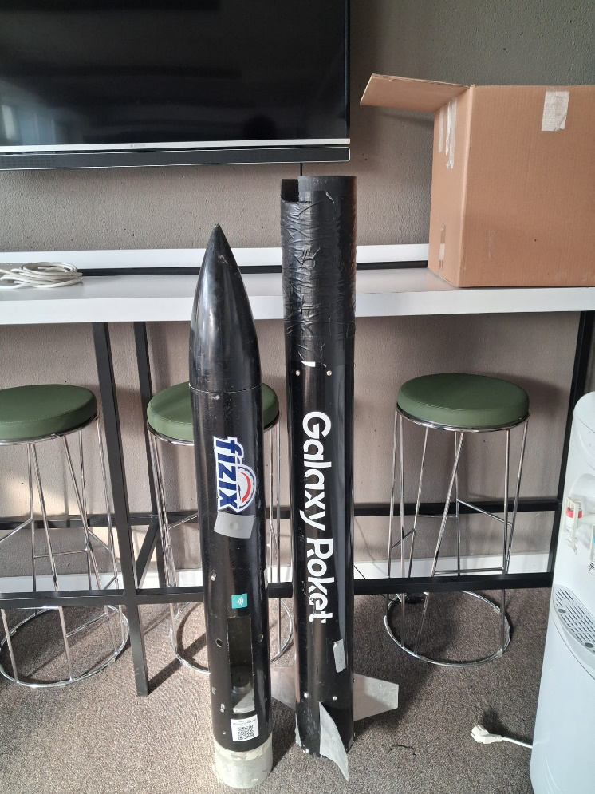
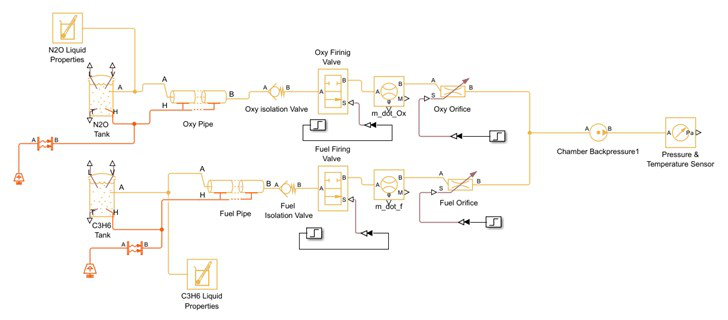
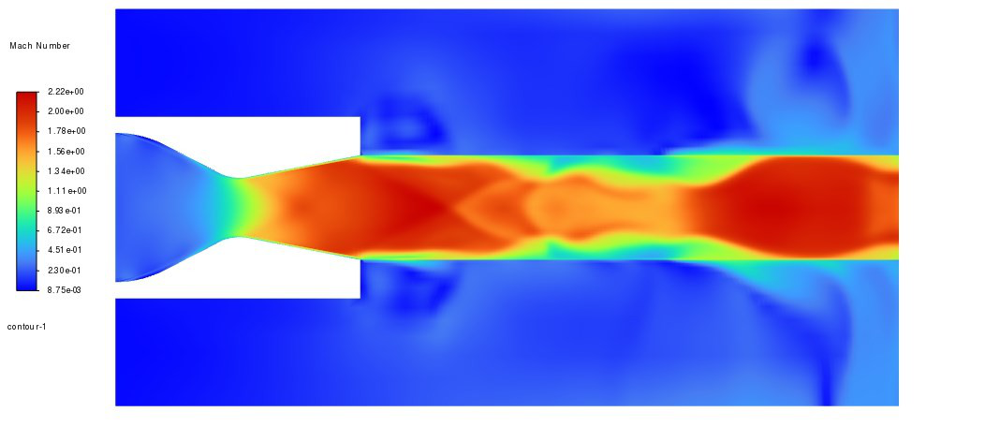
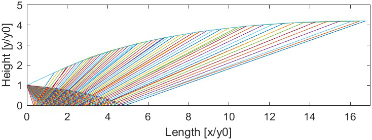
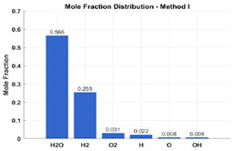

100N Liquid Bipropellant Engine
Role: Team Lead | Tools: ANSYS Fluent, Thermal
Designed a LOX/Jet-A1 engine for TEKNOFEST. Conducted combustion CFD and designed the cooling system to handle a 10-second burn duration at 3000 Kelvin.

Rocket Engines | Propulsion Analysis | Launch Systems
Fresh Aerospace Engineering graduate from Middle East Technical University (METU). I specialize in Propellant Feed Systems, Liquid Rocket Engine design, and CFD analysis, with hands-on experience building 100N engines and high-altitude rockets.
View Technical ProjectsLeading a 15-member team to design a 100N Liquid Bipropellant Rocket Engine. Responsible for thermal and CFD analysis, validating the combustion chamber design at 3000K and 10 bar pressure.
Lead the aerodynamic and structural design of a high-altitude rocket (15,000 ft). Executed CFD simulations to optimize drag (Mach 1.4) and performed FEA to ensure structural integrity under flight loads.
Designed and proposed a 20N Green Bipropellant Thruster (N2O/Propylene). Conducted trade-off analysis achieving 50% faster response than electric thrusters and significantly higher safety than hydrazine systems.
Role: Team Lead | Tools: ANSYS Fluent, Thermal
Designed a LOX/Jet-A1 engine for TEKNOFEST. Conducted combustion CFD and designed the cooling system to handle a 10-second burn duration at 3000 Kelvin.

Role: CFD Lead | Tools: ANSYS Mechanical, Composites
Designed a 2-meter rocket to reach 15,000 ft. Selected Aluminum 7075 for the motor block and integrated composite materials (carbon/glass fiber) to optimize weight and strength.

Tools: Simscape, CAD, P&ID
Designed a cost-effective thruster for small satellites (10–100 kg). Modeled the propulsion subsystem in Simscape and produced a 3D-printed nozzle prototype.

Tools: ANSYS Fluent, Viscous Flow
Built viscous compressible flow simulations with boundary-layer capturing. Validated results within 5–10% deviation from NASA's experimental data.

Tools: MATLAB, Method of Characteristics
Developed a MATLAB tool to generate an optimized nozzle contour for Mach 3 exit conditions. Implemented a Prandtl-Meyer function solver for smooth expansion.

Tools: MATLAB, Newton-Raphson
Created a solver to calculate equilibrium mole fractions of 6 combustion species for a Hydrogen-Oxygen engine. Solved chemical equilibrium equations using numerical methods.